정보처리산업기사 (2008-05-11 기출문제)
1과목: 데이터 베이스
1. 다음 괄호 안 내용으로 공통 적용될 수 있는 가장 적절한 것은?
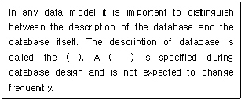
- database model
- database relation
- database domain
- database schema
(정답률: 62%)

2. 그래프로 표현하기에 적절치 않은 것은?
- 행렬
- 유기화학 구조식
- 통신 연결망
- 철도 교통망
(정답률: 66%)
3. 뷰(View)의 특성으로 옳지 않은 것은?
- 뷰는 물리적으로 구현되어 있지 않다.
- 뷰는 그 정의를 변경할 수 없다.
- 뷰 위에 또 다른 뷰를 정의할 수 있다.
- 하나의 뷰를 삭제하더라도 그 뷰를 기초로 정의된 다른 뷰는 자동으로 삭제되지 않는다.
(정답률: 76%)
4. 선형구조에 해당하지 않는 것은?
- 그래프(Graph)
- 큐(Queue)
- 스택(Stack)
- 배열(Array)
(정답률: 86%)
5. 후보키(Candidate key)가 만족해야 할 두 가지 성질로 가장 타당한 것은?
- 유일성과 최소성
- 유일성과 무결성
- 독립성과 최소성
- 독립성과 무결성
(정답률: 61%)
6. 키 값을 여러 부분으로 분류하여 각 부분을 더하거나 XOR 하여 주소를 얻는 해싱 함수 기법은 무엇인가?
- Divide
- Folding
- Mid-Square
- Digit Analysis
(정답률: 72%)
7. 데이터베이스의 설계과정이 옳은 것은?
- 요구분석→개념설계→논리설계→물리설계
- 요구분석→개념설계→물리설계→논리설계
- 요구분석→논리설계→물리설계→개념설계
- 요구분석→물리설계→개념설계→논리설계
(정답률: 88%)
8. Which of the following is an ordered list that all insertions take place at one end, the rear, while all deletions take place at the other end, the front?
- Array
- Stack
- Queue
- Binary Tree
(정답률: 68%)
9. 릴레이션의 특징으로 옳지 않은 것은?
- 한 릴레이션에 포함된 튜플들은 모두 상이하다.
- 모든 속성 값은 세분화가 가능해야 하므로 원자값 이어서는 안된다.
- 한 릴레이션에 포함된 튜플 사이에는 순서가 없다.
- 한 릴레이션을 구성하는 속성 사이에는 순서가 없다.
(정답률: 80%)
10. 관계 데이터모델이 가지는 제약조건 중 다음 설명에 해당하는 것은?
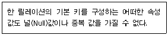
- 참조 무결성
- 개체 무결성
- 외래키 무결성
- 릴레이션 무결성
(정답률: 82%)
11. 버블 정렬을 이용한 오름차순 정렬시 다음 자료에 대한 1회전 후의 결과는?
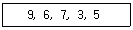
- 6, 7, 3, 5, 9
- 6, 3, 5, 7, 9
- 3, 6, 7, 9, 5
- 3, 9, 6, 7, 5
(정답률: 77%)
12. 데이터베이스의 특징 중 다음 설명에 해당하는 것은?
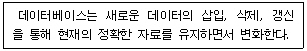
- Continuous Evolution
- Time Accessibility
- Concurrent Sharing
- Content Reference
(정답률: 68%)
13. 데이터베이스 스키마의 설명으로 옳지 않은 것은?
- 스키마는 데이터베이스의 구조와 제약조건에 관한 전반적인 명세를 기술한다.
- 외부 스키마는 응용프로그래머가 데이터베이스를 바라보는 관점이다.
- 개념 스키마는 조직이나 기관의 총괄적 입장에서 본 데이터베이스의 전체적인 논리적 구조이다.
- 하나의 데이터베이스 시스템에는 내부, 외부, 개념 스키마가 각각 하나씩만 존재한다.
(정답률: 73%)
14. 다음 그림에서 트리의 차수(Degree of a Tree)는?
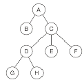
- 1
- 2
- 3
- 4
(정답률: 83%)
15. 데이터 모델의 구성 요소와 거리가 먼 것은?
- 데이터 구조
- 구성 요소의 연산
- 데이터의 논리적 제약 조건
- 저장 구조
(정답률: 64%)
16. 릴레이션 A는 5개의 튜플로 구성되어 있고, 릴레이션 B는 3개의 튜플로 구성되어 있다. 두 릴레이션에 대한 카티션프로덕트 연산의 결과로서 몇 개의 튜플이 생성되는가?
- 2
- 5
- 8
- 15
(정답률: 77%)
17. SQL 명령 중 DML에 속하지 않는 것은?
- SELECT
- INSERT
- DELETE
- ALTER
(정답률: 83%)
18. 관계대수의 프로젝트 연산의 연산자 기호는?
- π
- ∩
- ÷
- ∪
(정답률: 75%)
19. E-R 모델에서 사각형은 무엇을 의미하는가?
- 관계 타입
- 개체 타입
- 속성
- 링크
(정답률: 78%)
20. 논리적 데이터 모델 중 오너-멤버(Owner-Member)관계를 가지며, CODASYL DBTG 모델이라고도 하는 것은?
- E-R 모델
- 관계 데이터 모델
- 계층 데이터 모델
- 네트워크 데이터 모델
(정답률: 72%)
2과목: 전자 계산기 구조
21. +475를 존(Zone)형식으로 올바르게 표현한 것은?
- 475C
- 475D
- F4F7D5
- F4F7C5
(정답률: 55%)
22. 캐시기억장치에 대한 설명으로 적합한 것은?
- 현재 실행 중인 코드 저장
- 파일을 저장하는 장소
- 주기억 장치의 접근 속도는 동일
- 주기억 장치와 보조 기억 장치 사이에 위치
(정답률: 42%)
23. 기억된 프로그램의 명령어를 하나씩 읽어 와서 해독하는 장치는?
- 입력장치
- 제어장치
- 연산장치
- 기억장치
(정답률: 47%)
24. 입/출력장치의 속도가 CPU의 속도보다 느려서 발생하는 CPU의 idle time(시간낭비)를 줄이기 위한 것은?
- 병렬 연산 장치
- 입/출력 장치용 버퍼(buffer)기억장치
- 인덱스 레지스터
- 부동소수점 부가기구
(정답률: 75%)
25. 8비트로 표현되는 부호와 절대치의 방식에서 -50을 1비트 우측으로 시프트(Shift)했을 때 옳은 것은?
- 10011000
- 11011000
- 11011001
- 10011001
(정답률: 53%)
26. 버스 경합을 줄이기 위한 방법이 아닌 것은?
- 슈퍼스칼라 방식 사용
- 버스의 고속화
- 캐시의 사용
- 다중 버스 사용
(정답률: 60%)
27. 다음 중 에러 검출용 코드가 아닌 것은?
- Gray Code
- Biquinary Code
- 2 out-of 5 Code
- Hamming Code
(정답률: 58%)
28. 다음 설명 중 옳은 것은?
- 10101100의 오른쪽 4비트만 0(zero)으로 하려면 마스크 내용을 00001111로 OR 연산을 한다.
- 0(zero)은 부동소수점으로 표현할 수 없다.
- 논리적 시프트(왼쪽이나 오른쪽 모두)는 시프트된 공간에 항상 0(zero)이 들어온다.
- 산술 시프트(왼쪽이나 오른쪽 모두)는 시프트된 공간에 항상 0(zero)이 들어온다.
(정답률: 48%)
29. 프로그램 카운터가 명령의 번지 부분과 더해져서 유효번지가 결정되는 주소방식은?
- 상대 주소방식(relative address mode)
- 간접 주소방식(indirect address mode )
- 직접 주조상식(direct address mode)
- 인덱스 주소방식(indexed address mode)
(정답률: 46%)
30. 다음 자료는 기수 패리티 비트(odd parity bit)를 포함하고 있다. 잘못된 비트(bit)를 찾아내면? (단, 가장 오른쪽 열(column)에 있는 비트가 패리티 비트이고, 가장 밑에 있는 것이 패리티 워드이다.)
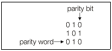
- 1행 1열의 비트
- 1행 2열의 비트
- 2행 2열의 비트
- 2행 1열의 비트
(정답률: 62%)
31. 수치 정보의 표현에 있어서 만족시켜야 할 조건이 아닌 것은?
- 기억장치의 공간을 적게 차지해야 한다.
- 10진수와 상호변환이 용이해야 한다.
- 데이터 처리 및 CPU내에서 이동이 용이해야 한다.
- 한정된 수의 비트로 나타내므로 정밀도가 낮아야 한다.
(정답률: 84%)
32. 전원을 차단해도 기억되어 있는 내용이 소멸하지 않는 것은?
- SDRAM
- Rambus DRAM
- EEPROM
- 캐시 메모리
(정답률: 75%)
33. 데이터 단위가 8비트인 메모리에서 용량이 8192byte인 경우의 어드레스 핀은 몇 개인가?
- 12
- 13
- 14
- 15
(정답률: 55%)
34. 그림은 2개의 반가산기와 하나의 OR게이트에 의한 전가산기를 실현시킨 것이다. 출력 S의 함수로서 옳은 것은?
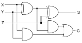
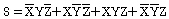
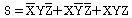
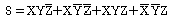
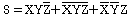
(정답률: 47%)
35. 내부 인터럽트(internal interrupt)와 거리가 먼 것은?
- overflow가 발생했을 때
- 분모를 0(zero)으로 나누었을 때
- 정보 전송이 끝났음을 알릴 때
- 스택이 넘칠 때
(정답률: 69%)
36. 마이크로 오퍼레이션들 중 수행시간이 유사한 마이크로오퍼레이션들끼리 모아 집합을 이루고 각 집합에 대해서 서로 다른 마이크로 오퍼레이션 사이클 타임을 정의하며 그 시간을 중앙처리장치의 클록 주기로 정하는 방식으로 제어는 복잡하지만 중앙처리장치 효율을 높일 수 있는 마이크로오퍼레이션 사이클 타임 방식은?
- 동기 고정식
- 동기 가변식
- 비동기 고정식
- 비동기 가변식
(정답률: 54%)
37. 단항 연산자(unary operation)가 아닌 것은?
- ROTATE
- COMPLEMENT
- AND
- SHIFT
(정답률: 63%)
38. 마이크로 오퍼레이션 수행에 필요한 시간을 무엇이라 하는가?
- search time
- seek time
- access time
- CPU clock time
(정답률: 49%)
39. 간접 주소지정 방식에서 명령어 ADD(47)이 수행되면 다음 중 어느 것이 연산장치로 보내지는가? (단, 기억장소 47번지에는 2002가 저장되어 있다.)
- 2002
- 2002번지의 내용
- 47
- 47번지의 내용
(정답률: 67%)
40. ASCII 문자 “A”와 숫자 “5”의 코드 값의 차이는 12 이다. ASCII 문자 “Z”와 숫자 “6”의 코드 값의 차이는?
- 36
- 35
- 26
- 25
(정답률: 48%)
3과목: 시스템분석설계
41. 체크 시스템은 컴퓨터 입력 단계의 체크와 계산 처리 단계의 체크로 구분할 수 있다. 다음 중 컴퓨터 입력 단계의 체크에 해당하지 않는 것은?
- 불일치 레코드 체크(Unmatched record check)
- 일괄 합계 체크(Batch total check)
- 순차 체크(Sequence check)
- 균형 체크(Balance check)
(정답률: 57%)
42. 시스템 평가에서 처리시간의 견적 방법으로 먼 것은?
- 입력에 의한 계산 방법
- 프로그램 크기에 의한 계산 방법
- 컴퓨터에 의한 계산 방법
- 추정에 의한 계산 방법
(정답률: 45%)
43. 자료 사전에 사용되는 기호 중 반복을 의미하는 것은?
- +
- ( )
- [ ]
- { }
(정답률: 72%)
44. 파일 편성법 중 랜덤 편성법에 대한 설명으로 거리가 먼 것은?
- 처리하고자 하는 레코드를 주소 계산에 의하여 직접 처리할 수 있다.
- 어떤 레코드도 평균 액세스 타임으로 검색이 가능하다.
- 운영체제에 따라서는 키 변환을 자동적으로 하는 것도 있다.
- 키-주소 변환 방법에 의하여 충돌이 발생할 염려가 없으므로 이를 위한 기억 공간의 확보가 필요 없다.
(정답률: 78%)
45. 프로세스의 표준 패턴 중 입력 파일의 데이터를 분배 조건에 따라 몇 가지 유형으로 분할하여 출력하는 처리를 무엇이라 하는가?
- Update
- Merge
- Matching
- Distribution
(정답률: 70%)
46. 코드화 대상 항목을 10진 분할하고, 다시 그 각각에 대하여 10진 분할하는 방법을 필요한 만큼 반복하는 코드로서, 코드 대상 항목의 추가가 용이하며 무제한적으로 확대할 수 있으나 자리수가 길어질 수 있고 기계처리에는 적합하지 않은 코드는?
- Sequence code
- Group classification code
- Block code
- Decimal code
(정답률: 56%)
47. 문서화(Documentation)의 설명 중 적합하지 않은 것은?
- 프로그램 내에도 문서화를 할 수 있다.
- 문서화는 시스템이 모두 개발된 후에 일괄적으로 작업해야 정확하다.
- 문서도 시스템 구성요소의 하나다.
- 문서화는 시스템 개발 과정의 작업이라고 할 수 있다.
(정답률: 72%)
48. 소프트웨어 위기와 관련이 적은 것은?
- 소프트웨어 개발 인력 부족과 그에 따라 인건비가 상승함.
- 소프트웨어 성능발달로 인하여 하드웨어 개발 속도가 소프트웨어 개발 속도를 따라가지 못함
- 소프트웨어의 요구가 다양해지면서 수요는 계속 늘어나는데 공급은 이를 따라주지 못함
- 소프트웨어 개발 시간이 지연되고 개발비용의 초과로 인한 문제가 발생함
(정답률: 70%)
49. 하나 이상의 유사한 객체들을 묶어서 하나의 공통된 특성을 표현한 객체지향의 요소는?
- 객체(object)
- 클래스(class)
- 실체(instance)
- 메시지(message)
(정답률: 84%)
50. 색인순차편성파일(indexed sequential file)의 각 구역 중 일정한 크기의 블록으로 블록화 하여 처리할 키 값을 갖는 레코드가 어느 실린더 인덱스 상에 기록되어 있는가를 나타내는 정보가 수록된 구역은?
- 마스터 인덱스 구역
- 실린더 인덱스 구역
- 트랙 인덱스 구역
- 기본 데이터 구역
(정답률: 49%)
51. 객체지향 기법에서 객체의 데이터와 오퍼레이션을 하나로 묶고 실제 구현되는 내용은 외부에 감추는 행위에 대한 설명으로 거리가 먼 것은?
- 정보의 손상과 오용을 방지함
- 상위 클래스의 메소드를 비롯한 모든 속성을 하위 클래스가 물려받을 수 있음을 의미함
- 연산 방법이 바뀌어도 연산 자체에는 영향을 주지 않음
- 자료가 변해도 다른 객체에 영향을 주지 않기 때문에 독립성을 보장함
(정답률: 50%)
52. 출력 설계 순서가 옳은 것은?
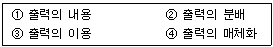
- ①→④→②→③
- ④→②→③→①
- ②→③→①→④
- ③→①→④→②
(정답률: 65%)
53. 프로세서 설계에 대한 설명으로 옳지 않은 것은?
- 정확성을 고려하여 처리과정을 명확히 명시한다.
- 프로세서의 분류 처리는 가능한 상세하고 크게 한다.
- 시스템의 상태나 구성 요소 등을 종합적으로 표시한다.
- 정보의 흐름이나 처리 과정은 모든 사람이 이해할 수 있는 표준화 방법을 이용한다.
(정답률: 74%)
54. 코드의 오류 검출 방법 중 코드에 검사할 수 있는 숫자를 부여하여 컴퓨터에 의해 자동으로 검사하는 방법은?
- 합계 검사(Total check)
- 균형 검사(Balance check)
- 반향 검사(Echo check)
- 체크 디지트 검사(Check digit check)
(정답률: 75%)
55. 모듈의 결합도는 설계에 대한 품질 평가 방법의 하나로서 두 모듈 간의 상호 의존도를 측정하는 것이다. 다음 중 설계 품질이 가장 좋은 결합도는?
- Common Coupling
- Data Coupling
- Control Coupling
- Content Coupling
(정답률: 48%)
56. 시스템의 기본 요소 중 출력 결과가 만족스럽지 않거나, 보다 나은 출력을 위하여 재입력하는 것을 무엇이라고 하는가?
- Input
- Process
- Feedback
- Control
(정답률: 81%)
57. 파일이 종류 중 일시적인 성격을 지닌 정보를 기록하는 것은?
- Transaction file
- Backup file
- Source data file
- Master file
(정답률: 72%)
58. 파일 설계 순서로 옳은 것은?
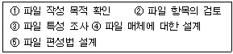
- ②→③→①→⑤→④
- ⑤→②→①→④→③
- ①→②→③→④→⑤
- ④→①→⑤→②→③
(정답률: 73%)
59. 다음은 어떤 종류의 코드 오류(error)인가?
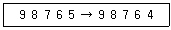
- Transposition error
- Random error
- Transcription error
- Double Transposition error
(정답률: 73%)
60. 구체화된 새로운 시스템이 본래의 요구를 만족하는가를 평가하는 기준으로 거리가 먼 것은?
- 가격
- 처리시간
- 기능
- 신뢰성
(정답률: 80%)
4과목: 운영체제
61. UNIX에서 새로운 프로세스를 생성시키는 시스템 호출은?
- fork
- exit
- brk
- wait
(정답률: 82%)
62. 운영체제의 운용 기법 중 일괄처리 시스템에 대한 설명으로 옳지 않은 것은?
- 컴퓨터 하드웨어를 효율적으로 사용할 수 있다.
- 사용자 측면에서는 응답 시간이 길어진다.
- 우주선 운행이나 레이더 추적기 등의 작업에 사용된다.
- 유사한 성격의 작업을 한꺼번에 모아서 처리하는 시스템이다.
(정답률: 72%)
63. 강결합(Tightly-coupled) 시스템과 약결합(Loosely-coupled) 시스템에 대한 설명으로 옳지 않은 것은?
- 약결합 시스템은 각각의 시스템이 별도의 운영체제를 가진다.
- 강결합 시스템은 각 프로세서마다 독립된 메모리를 가진다.
- 강결합 시스템은 하나의 운영체제가 모든 처리기와 시스템 하드웨어를 제어한다.
- 약결합 시스템은 메시지를 사용하여 상호 통신을 한다.
(정답률: 58%)
64. 시스템에서 최적의 페이지 크기를 결정시 고려사항으로 거리가 먼 것은?
- 페이지 크기가 작을수록 페이지 테이블 크기가 커진다.
- 페이지 크기가 작을수록 입/출력 전송이 효율적이다.
- 페이지 크기가 작을수록 내부의 단편화로 인한 낭비 공간이 줄어든다.
- 페이지 크기가 작을수록 좀 더 효율적인 워킹 셋을 유지할 수 있다.
(정답률: 49%)
65. 파일 시스템의 일반적인 기능으로 거리가 먼 것은?
- 언어의 종류에 관계없이 모든 원시 프로그램을 컴파일 가능하도록 한다.
- 사용자가 파일을 생성하고, 변경하고, 제거할 수 있도록 한다.
- 정보의 손실이나 파괴를 방지하기 위해 백업과 복구 능력을 갖추어야 한다.
- 사용하기 편리한 인터페이스를 제공해야 한다.
(정답률: 70%)
66. CPU 스케줄링 기법에서 작업이 끝나기까지의 실행시간 추정치가 가장 작은 작업을 먼저 실행시키는 기법은?
- FIFO
- SRT
- SJF
- HRN
(정답률: 59%)
67. 분산처리 시스템에 대한 설명으로 거리가 먼 것은?
- 계산속도 향상
- 보안의 용이성 향상
- 신뢰성 향상
- 자원 공유 증대
(정답률: 70%)
68. 기억장치 배치(Placement)전략에 해당하지 않은 것은?
- First fit
- Second fit
- Best fit
- Worst fit
(정답률: 75%)
69. FIFO 기법을 적용하여 작업 스케줄링을 하였을 때, 다음 작업들의 평균 회수시간(Turnaround time)은? (단, 문맥교환시간은 무시한다.)
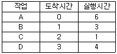
- 6.75
- 7.25
- 7.75
- 8.25
(정답률: 42%)
70. 페이지교체기법 중 시간 오버헤드를 줄이는 기법으로서 참조비트(Referenced bit)와 변형 비트(Modified bit)를 필요로 하는 방법은?
- FIFO
- LRU
- LFU
- NUR
(정답률: 70%)
71. 공유변수를 액세스하고 있는 하나의 프로세스 외에는 다른 모든 프로세스들이 공유변수를 액세스 못하도록 제어하는 기법을 무엇이라 하는가?
- 상호 배제
- 임계 구역
- 동기화
- 교착 상태
(정답률: 64%)
72. FCFS(First Come First Served) 스케줄링의 특성으로 거리가 먼 것은?
- 대기 큐를 재배열하지 않고 일단 요청이 도착하면 실행 예정 순서가 도착순으로 고정된다.
- 더 높은 우선 순의를 가진 요청이 도착하더라도 요청의 순서가 바뀌지 않는다.
- 먼저 도착한 요청이 우선적으로 서비스를 받게 되므로 근본적인 공평성이 보장되고 프로그래밍하기도 쉽다.
- 실린더의 제일 안쪽과 바깥쪽에서 디스크 요청의 기아(starvation) 현상이 발생할 수 있다.
(정답률: 60%)
73. 교착 상태 발생의 4가지 필요충분조건이 아닌 것은?
- 상호배제
- 점유와 대기
- 비선점
- 내부 시스템 자원 순서화
(정답률: 71%)
74. UNIX의 쉘(Shell)에 대한 설명으로 옳지 않은 것은?
- 사용자와 커널 사이에서 중계자 역할을 한다.
- 스케줄링, 기억장치 관리, 파일 관리, 시스템호출 인터페이스 등의 기능을 제공한다.
- 여러 가지의 내장 명령어를 가지고 있다.
- 사용자 명령의 입력을 받아 시스템 기능을 수행하는 명령어 해석기이다.
(정답률: 54%)
75. 하나의 프로세스가 자주 참조하는 페이지들의 집합을 무엇이라 하는가?
- Locality
- Working set
- Segment
- Fragmentation
(정답률: 74%)
76. 가상기억장치에 대한 설명으로 옳지 않은 것은?
- 컴퓨터시스템의 주기억장치 용량보다 더 큰 저장용량을 주소로 지정할 수 있도록 해준다.
- 페이징과 세그먼테이션 기법을 이용하여 가상기억장치를 구현할 수 있다.
- 다중 프로그래밍의 효율을 높일 수 있다.
- 프로세스가 갖는 가상주소 공간상의 연속적인 주소가 실제기억장치에서도 연속적이어야 한다.
(정답률: 69%)
77. 운영체제의 역할에 해당하지 않는 것은?
- 사용자와 컴퓨터 시스템 간의 인터페이스 기능을 제공한다.
- 사용자 간의 자원 사용을 스케줄링한다.
- 사용자 간의 데이터를 공유하게 해준다.
- 사용자가 작성한 원시 프로그램을 번역한다.
(정답률: 82%)
78. 병행 프로세스의 상호 배제 구현 기법으로 거리가 먼 것은?
- 데커 알고리즘
- Test_And_Set 명령어 기법
- 피터슨 알고리즘
- 은행원 알고리즘
(정답률: 70%)
79. 다음은 일반적으로 널리 사용되는 파일 보호 기법에 대하여 기술하고 있다. UNIX 시스템에서는 파일보호를 위해 read, write, execute 등 세 가지 접근 유형을 정의하여 사용하고 있다. 이는 어떤 방법을 응용한 것인가?
- 파일의 명명(Naming)-파일 이름을 다른 사용자가 알 수 없도록 만든다.
- 접근제어(Access control)-사용자의 신원에 따라 서로 다른 접근 권한을 허용한다.
- 비밀번호(Password)-각 파일에 판독/기록 패스워드를 부여한다.
- 암호화(Cryptography)-파일의 내용을 알 수 없도록 암호화한다.
(정답률: 65%)
80. 프로세서의 정의와 거리가 먼 것은?
- 디스크 상에 저장된 파일 형태의 내용
- 실행중인 프로그램
- 프로시저가 활동 중인 것
- 운영체제가 관리하는 실행 단위
(정답률: 69%)
5과목: 정보통신개론
81. 다음 중 PBX 란 무엇을 의미하는가?
- 공공구내교환 시스템
- 사설구내교환 시스템
- 고속네트워크 시스템
- 광역네트워크 시스템
(정답률: 50%)
82. HDLC(High level Data Link Control) 프로토콜에 대한 설명으로 옳지 않은 것은?
- 동작모드에는 정규 응답모드 및 비동기식 응답모드 등이 있다.
- 링크는 점대점 및 멀티포인트 형태로 구성할 수 있다.
- 프레임의 구조 중 FCS는 8비트로 구성된다.
- 반이중 및 전이중의 통신방식이 가능하다.
(정답률: 51%)
83. ISO에서 표준안으로 발표한 비트 동기방식의 프로토콜은?
- HDLC
- BSC
- DDCMP
- TCP/IP
(정답률: 47%)
84. 다음 중 IEEE 관련 MAN의 표준안으로 DQDB에 관한 것은?
- IEEE 802.1
- IEEE 802.3
- IEEE 802.6
- IEEE 802.8
(정답률: 50%)
85. 다음 중 광섬유에서 발생하는 손실이 아닌 것은?
- 접속손실
- 레일리분산손실
- 마이크로벤딩손실
- 흡수손실
(정답률: 42%)
86. 정보통신시스템에서 통신제어장치의 기능이 아닌 것은?
- 회선의 감시
- 가상단말
- 에러의 검출 및 제어
- 전송 및 접속제어
(정답률: 64%)
87. 다음 중 LAN의 전송매체로 전송특성이 가장 우수한 것은?
- 동축 케이블
- UTP 케이블
- 광 케이블
- 폼스킨 케이블
(정답률: 81%)
88. 보안을 위한 암호화(Encryption)와 해독(Decryption) 및 데이터 압축을 주로 지원하는 OSI 계층은?
- 전송계층(Transport Layer)
- 세션계층(Session Layer)
- 표현계층(Presentation Layer)
- 응용계층(Application Layer)
(정답률: 60%)
89. 8진 PSK는 한 번에 몇 개의 신호 비트[bit]를 전송 할 수 있는가?
- 2
- 3
- 4
- 8
(정답률: 62%)
90. 통신채널의 통신용량을 증가시키기 위한 방법이 아닌 것은?
- 신호세력을 높인다.
- 잡음 세력을 줄인다.
- 데이터 오류를 줄인다.
- 주파수 대역폭을 증가시킨다.
(정답률: 53%)
91. 이동통신 단말 사용자가 가입 등록한 사업자의 서비스 지역이 아닌 다른 사업자의 서비스 지역에서도 정상적인 서비스를 가능하게 해주는 것은?
- Hand-off
- Roaming
- Cell
- Base station
(정답률: 61%)
92. 데이터 전송에서 변조속도가 1600[baud]이고 트리비트(tribit)를 사용한다면 전송속도[bps]는 얼마인가?
- 1600
- 3200
- 4800
- 6400
(정답률: 73%)
93. 다음 중 디지털 정보에 따라 반송파의 주파수를 변화시키는 변조 방식은?
- ASK
- FSK
- PSK
- PCM
(정답률: 59%)
94. 패킷교환망과 패킷교환망의 연결을 망간 접속이라 한다. 망간 접속을 위한 프로토콜을 규정하고 있는 권고안은?
- X.25
- X.28
- X.75
- X.121
(정답률: 41%)
95. 다음 중 정보에 대하여 가장 적합하게 설명한 것은?
- 인간 또는 기계가 감지할 수 있도록 숫자, 문자, 기호 등으로 형식화한 것이다.
- 멀리 떨어져 있는 입ㆍ출력장치와 컴퓨터가 서로 주고 받는 것이다.
- 여러 가지 데이터를 처리한 후, 특정 목적 수행을 위하여 체계화한 것이다.
- 기계와 기계 사이에 전달되는 일체의 기호이다.
(정답률: 69%)
96. ITU-T에 의해 개발된 표준으로 공중 데이터망을 통한 데이터의 전송을 규정한 시리즈는?
- Q
- V
- X
- Z
(정답률: 61%)
97. 다음 중 초고속정보통신망의 ATM에 대한 설명으로 틀린 것은?
- 48 바이트의 페이로드(Payload)를 갖고 있다.
- 5 바이트의 헤더를 갖고 있다.
- 멀티미디어 서비스에 적합하다.
- 동기식 전달모드로 고속데이터 전송에 사용된다.
(정답률: 52%)
98. 다음 전송제어문자 중 상대국에 응답을 요구하는 것은?
- ETB
- ENQ
- DLE
- ACK
(정답률: 55%)
99. 다음 중 데이터 전송의 오류 검출 방식이 아닌 것은?
- 패리티(Parity)검사
- 블록합검사
- 순환잉여검사(CRC)
- 바이폴라(Bipolar)검사
(정답률: 57%)
100. 다음 중 비동기식 전송방식에 대한 설명으로 틀린 것은?
- 각 전송문자 사이에는 휴지기간이 존재한다.
- 송/수신 장치의 동기 형태는 비트 동기방식이다.
- 전송속도가 주로 저속에서 운용된다.
- 각 전송문자의 앞뒤에 시작 및 정리 비트를 삽입한다.
(정답률: 39%)